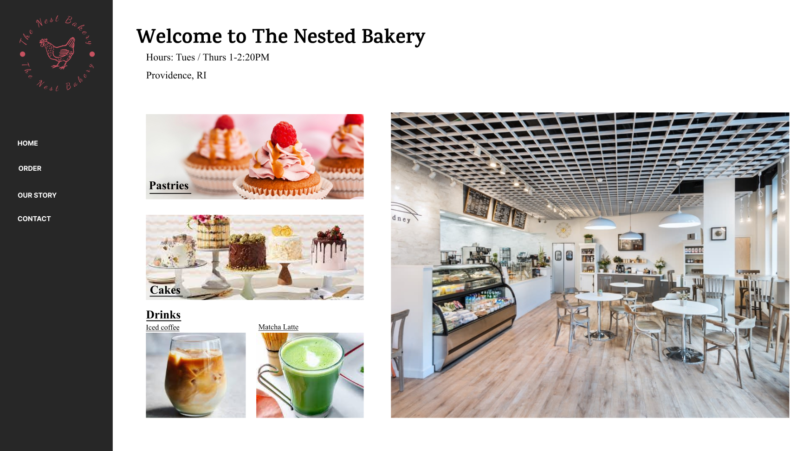
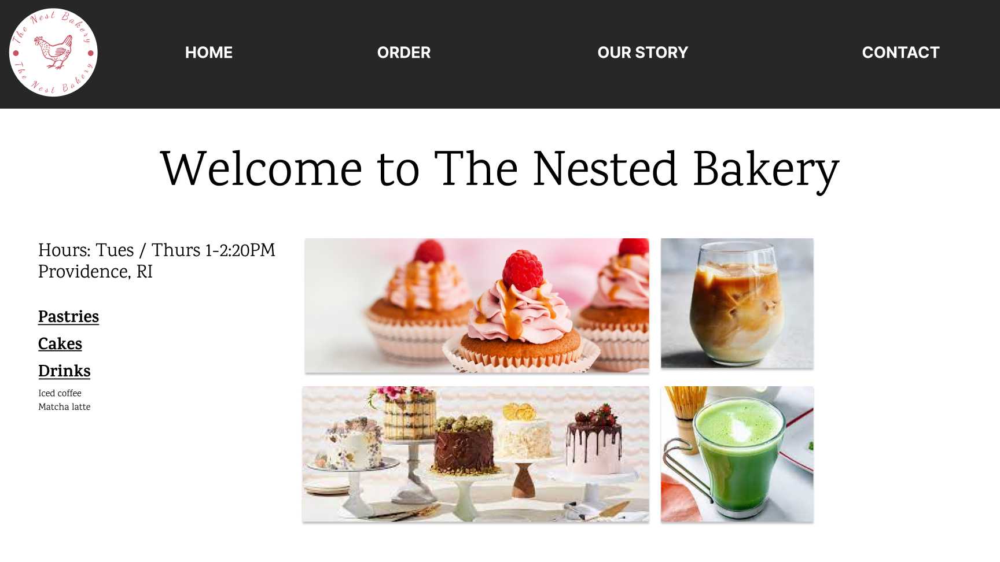
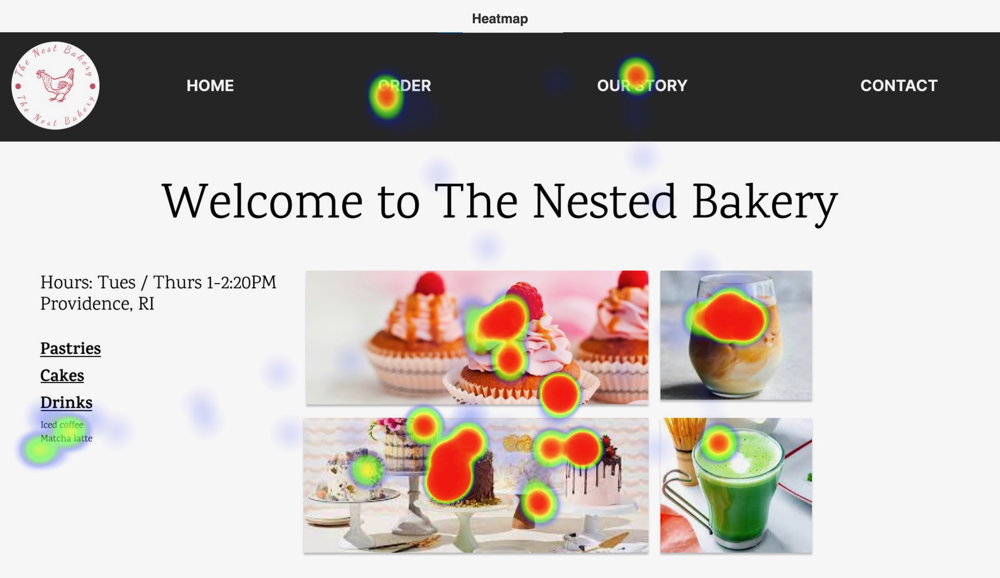
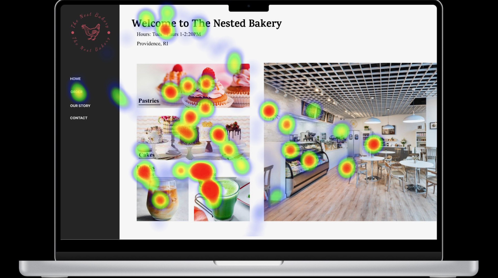
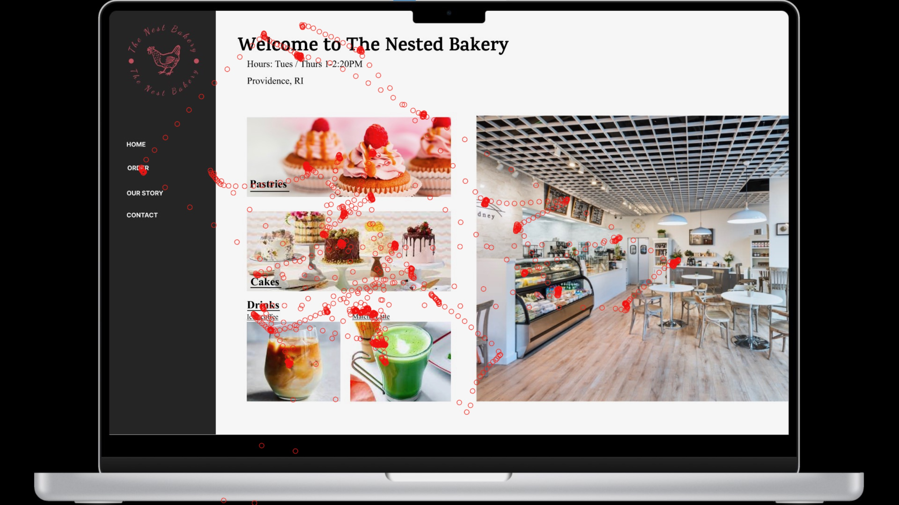

A/B Testing & Eye Tracking
Background
This project was done CS1300: UI/UX. The goal of the assignment was to learn how to evaluate different UI designs through quantitative data (A|B testing) and qualitative testing (eye tracking data).
A|B testing is a technique commonly used in user research to compare two different variations of an interface. In this process, half of the users will be shown one design and the other half will be shown a different design and the researchers will run tests to see which performed better.
Eyetracking is another technique used to evaluate where users look on a screen and for how long.
Step 1: A/B Testing
Data Collection
In class, everyone looked at one of two variations of a bakery website, added items to their cart, and checked out
Version A is seen below on the left and Version B is seen below on the right
Statistical Analysis
We conducted several different statistical tests to determine which version had a higher success rate, shorter time to completion, and shorter time to add the first item to their cart.
We found that it took users of version A less time to add the first item to their cart and less time to complete the task. However, there was no difference in success rate between the two versions.
Step 2: Eye Tracking
Creating Two Designs
We wanted to test several differences in the design
- Location of nav bar (side or top)
- Font size
- Image of bakery or only images of food
Version A
Version B
Our Hypothesis
We think that version A will make people look more at the logo because it has a white background. We also think that they will spend more time looking at the images than the listed options since the images are more visually intriguing. We think that version B will make people look at the nav bar less since it is off to the side and that people will look more at the images on the left than the one on the right because they show more of what is offered and have more visual interest.
Testing
To test our two designs we brought two participants into a lab that has a computer that can track eye movement.
One participant saw version A and the other saw version B. They were both given the same instructions: use your eyes to order food for one person.
Results
We analyzed the results of our experiment by creating heat maps and a map of eye tracking data.
As predicted, the layout of version B attracted users more to the images on the left than the main image on the right, just as the images of food options were the main focus of version A. The menu bar on the left of version B did not attract much attention, as the text was too small and off to the side; version A’s large text on the top was a better choice. Interestingly, neither user was interested in the store logo, regardless of its background.
The heat maps and eye tracking maps can be seen below.
Heat Map for A
Heat Map for B
Eye Tracking for A
Eye Tracking for B
Conclusion
This project taught me a number of skills. I learned how to develop two unique designs and statistically prove which was better through qualitative and quantitative data